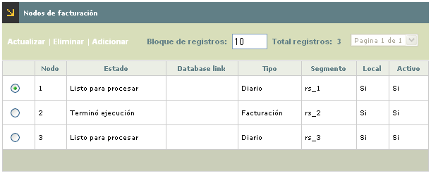
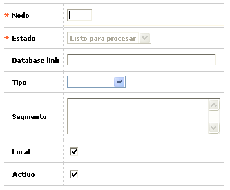
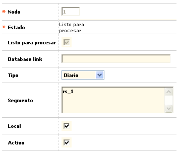

Nodos de facturación |
Mediante esta opción se permite la consulta y/o mantenimiento de la tabla en la que se definen los factibles puntos locales o remotos (nodos) sobre los que la entidad puede generar procesos paralelos de facturación, bien sea sobre una misma máquina o sobre host remotos.
El formulario contiene las opciones Actualizar, Eliminar, y Adicionar.

Adicionar: Si el usuario invoca la opción Adicionar se despliega un formulario con los siguientes campos:

Nodo |
Campo numérico de dos dígitos, obligatorio, que identifica a cada uno de los nodos o puntos en los que es probable efectuar procesos de facturación en paralelo. |
Estado |
Este campo posee lista de valores de la cual el sistema asigna a cada nuevo registro, por defecto, la opción listo para procesar, pero puede desplegar otros valores tales como Falló, Proceso o Terminó. |
Database link |
Campo alfanumérico de 30 dígitos, no obligatorio, dentro del que aparece el nombre del objeto mediante el cual se establece la conexión entre un host remoto y la base de datos correspondiente. |
Tipo |
Este campo despliega una lista de valores que permite escoger los tipos de procesos que aplican para el nodo, entre Diario o Facturación. |
Segmento |
Este campo muestra el nombre que da el administrador de la base de datos de cada entidad al nodo especifico. |
Local |
En este campo se indica si el host sobre el que se procesa es local o no. |
Activo |
Campo en el que se determina la condición de activo o no de cada nodo, con esto se permite que la entidad pueda administrar la forma en que realiza sus procesos de facturación. |
Actualizar: Si el usuario invoca la opción Actualizar se despliega un nuevo formulario en el cual los únicos campos modificables son: Database link, Tipo, Segmento, Local, y Activo.
